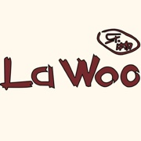

SHOP
Come and Find Your Happiness

2011年，在上海田子坊文化创意园区的一个小手工作坊里，传递快乐的事业，简简单单地，开始启程。 四年的手作生涯，我们也没找到响亮的品牌口号，没有发掘后现代的高端设计，一定要问我们追求什么，那就是Isabel姑娘的那句话 “因为我很快乐，我希望用我的作品将快乐传递出去，给更多人带来快乐和幸福的体验，仅此而已。” 在不长不短的四个年头里，我们确实只做了一件事，那就是不停的设计和创作各种各样的羊毛毡手工制品，不断挑战更为高级的工艺和直指人心的设计。现在乐物已经拥有上百种作品类目，将羊毛毡的可塑性发挥的淋漓尽致，虽然乐物的家庭成员越来越多，可是他们都没有丢掉乐物最简单最本质的初心，也永远不会忘记——传递快乐。 即使已经四年了，每当客人到店里看着作品傻乐的时候，我们也会跟着客人一起开心，现在的人越来越不会笑了，每次看到客人们被我们的作品感染情绪，我们也跟他们一样开心。
品牌历程：
2011年12月 乐物创立于上海田子坊
2012年3月 注册品牌商标，并接受《乐活生活杂志》专访
2012年6月 同博洋进出口贸易公司合作定制出口款帽饰
2013年7月 接受《ELLE家居廊》专访
2013年9月 接受日本杂志《上海漫步》采访、拍摄
2013年11月 接受《周末画报》采访、拍摄
2014年3月 接受《伊周》专访
2014年5月 作品受邀参加李亚鹏嫣然基金会慈善晚会
2014年10月 乐物上海浦东嘉里城店开业
2014年12月 乐物上海高岛屋店开业
2015年2月 接受英国杂志《felt matters》专访
2015年6月 参加彩虹雨自闭症儿童义卖慈善活动
2015年11月 乐物第四家门店在苏州诚品百货开业
2016年6月 同高端护肤品牌MTM合作VIP专属活动